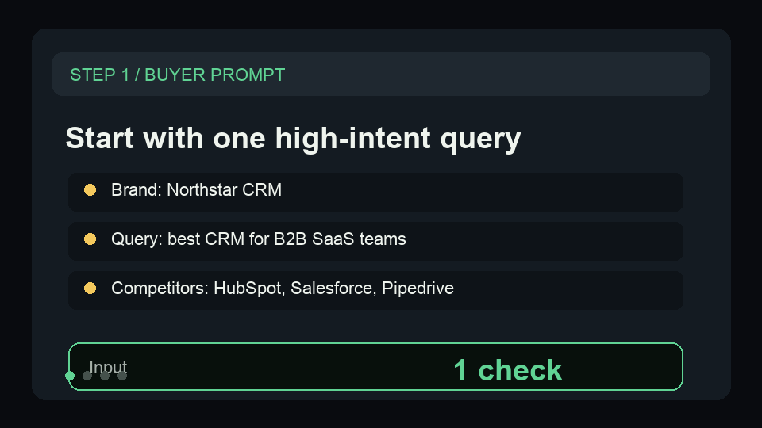

Package AI answer visibility into a client report.
A first-run workflow for SEO and GEO agencies that need repeatable AI visibility scorecards, competitor mentions, and client-ready reporting.
SEO agencies, GEO/AEO consultants, and client-facing marketing teams
AI-answer checks are easy to demo once, but hard to turn into repeatable client evidence.
weekly prompt checks, competitor mention tables, priority content gaps, and a reusable REPORT.md.
Run prompt checks
Track brand mentions, competitors, citations, and visibility score for the same buyer-intent prompts.
Generate the report
Turn structured checks into an executive summary, scorecard, competitor table, and priority gaps.
Send the update
Use REPORT.md as a client email, Slack update, Docs section, or monthly GEO proof artifact.
Start narrow, then connect the workflow.
Open a small sample first. Once the output fits the job, connect the matching scraper dataset or schedule.
| Actor | Buyer | Link |
|---|---|---|
| AI Visibility Report Generator | Agencies, GEO/AEO consultants, client-facing marketing teams | Store |
| AI Brand Visibility Monitor - GEO & AI Search Tracker | SEO agencies, GEO/AEO consultants, brand marketers, B2B SaaS marketing teams | Store |
Built for specific buyer queries.
This page exists to answer focused workflow searches before routing the buyer to a sample-led Store path.
| Query shape |
|---|
| AI visibility reporting for agencies |
| GEO client report workflow |
| AI search report generator |
Preview the output before opening the Store page.
These public-safe GIFs show the first-run sample becoming the buyer-facing workflow artifact.
Paste the sample, then open REPORT.md.
The Store sample uses fictional Northstar CRM checks, so a buyer can run the report without an API key, private dataset, or production client account.

Run one buyer prompt and inspect the gap.
The Store sample uses fictional Northstar CRM checks, so a buyer can see competitor mentions, missing brand visibility, and a recommended content action without a production client account.

Turn a scraped dataset into one repeatable business decision, not another export.
Show the before/after dataset shape and the exact decision the Actor helps make.
Route through the existing click bridge and keep the page focused on one Actor family.
Need this adapted before the first run?
Send a public-safe workflow request if the sample, setup, or output handoff needs a variant.
Keep requests public-safe: no credentials, private URLs, customer data, emails, or sensitive business data.